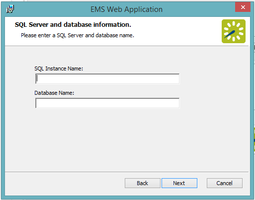

Manually uninstall any previous versions of VEMS or
Verify that Requirements and Prerequisites have been met.
Beginning with Update 31, EMS Platform Services is a prerequisite for installing and using the EMS Web App. If EMS Platform Services has not yet been installed in your environment, validate the hardware and software requirements for EMS Platform Services.
If your organization uses the EMS Mobile App, EMS Kiosk App, Google Integration, EMS for Outlook, or SAML authentication, then EMS Platform Services is already running in your environment.
Download the EMSWebApplication.msi file onto the web server that will be running
Run EMSWebApplication.msi.
The first screen welcomes you to the

In the Destination Folder screen, select the destination folder.

The installation process will create a new physical directory on your web server based on the destination folder path you entered. Click Next.
Choosing a folder above other than the default will create a new physical directory on your web server at that location. If your organization uses Internet Information Services (IIS), make sure that the user account used for IIS (IUSR and/or IIS_IUSRS) has access to this new installation directory. To learn more, see Windows Server 2008/2008 R2 Web Server Setup Guide or Windows Server 2012/2012 R2 Web Server Setup Guide.
In the SQL Server and database information screen that appears, enter your SQL Instance Name and your Database Name and click Next.
The database name is typically “EMS.”

In the Virtual Directory information screen that appears, the Virtual Directory Name will default to the destination folder you specified (in Step 6 above). It is recommended that you keep the default setting. The installation process will create a virtual directory on your web server based on the virtual directory entered (“EmsWebApp” in the example above). Click Next.
On the Ready to install EMS Web Application screen that appears, click Install.

On the Completed the EMS Web App Setup Wizard screen that appears, click Finish.
EMS Platform Services is required for Update 31 or later; ensure that EMS Web App is connected to EMS Platform Services as follows: